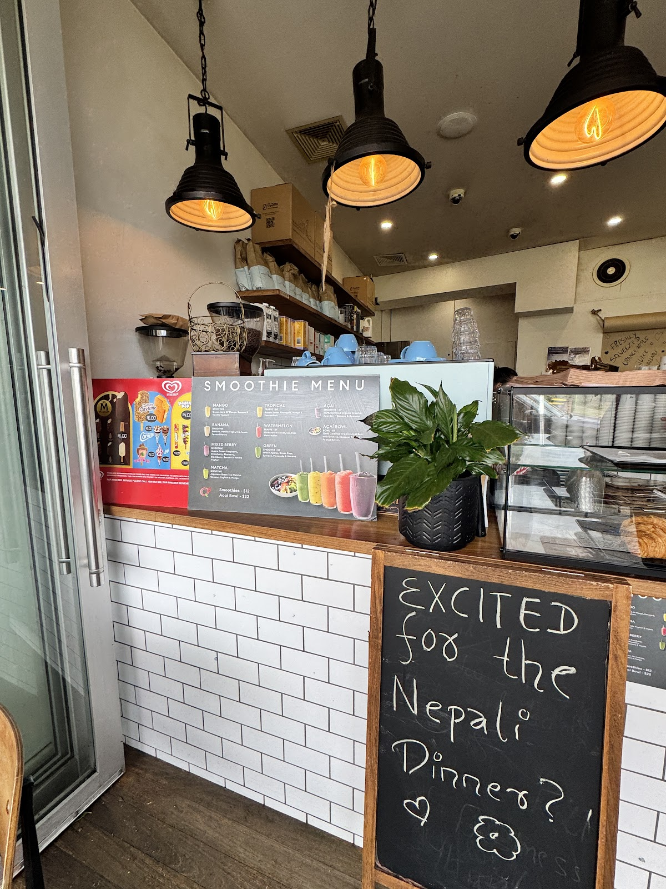
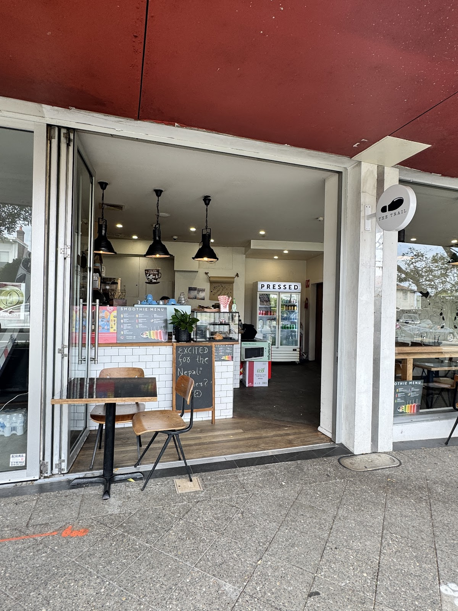
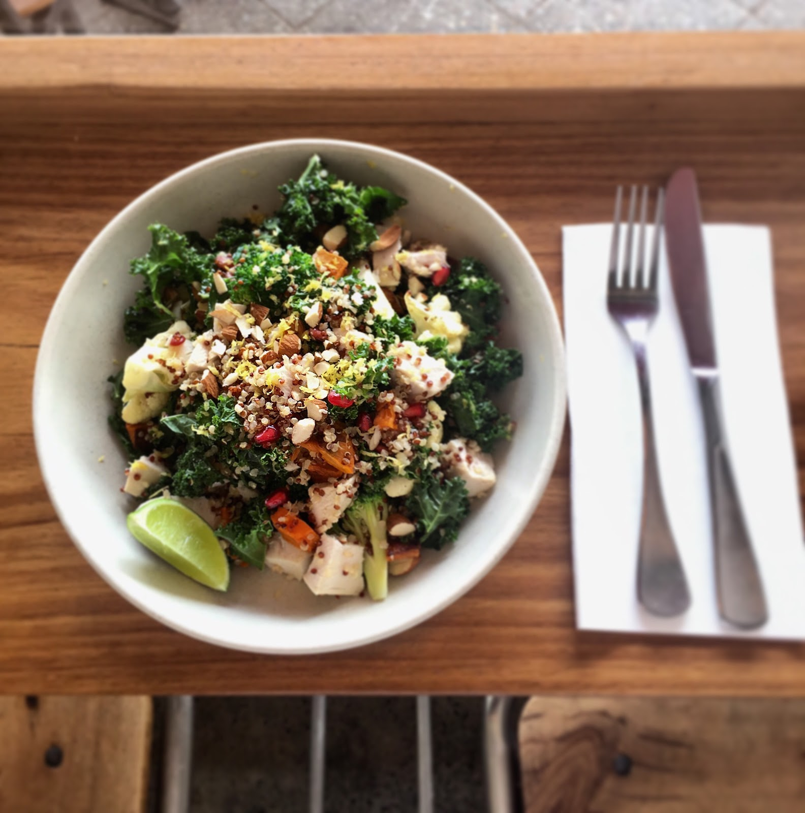

The shopfront
Concrete, subway tile, and an awning that means business.
The Trail sits behind a full-glass shopfront on New South Head Road, the bifold doors folded right back so the footpath tables and the counter are basically one room. The oxblood awning does the work of keeping the sun off; the chalkboard behind the counter does the work of telling you what's good today.
Coffee runs on single-origin beans from The Little Marionette. Reviewers keep using the same word for the place: "cozy" — the kind of small, unpretentious cafe that ends up being someone's regular spot without really trying to be anything else.
Monday – Sunday7:00am – 3:00pm